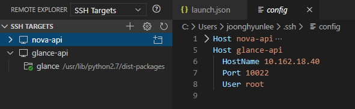
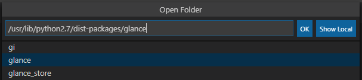
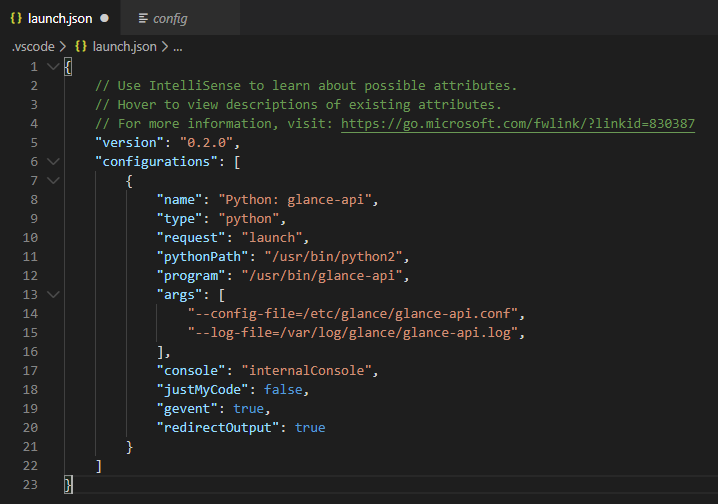
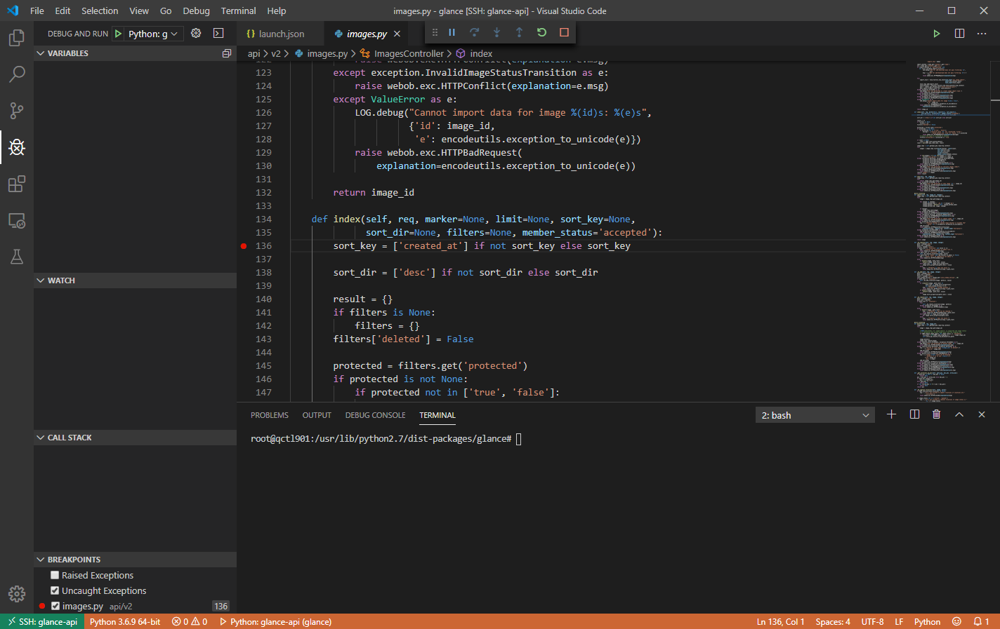
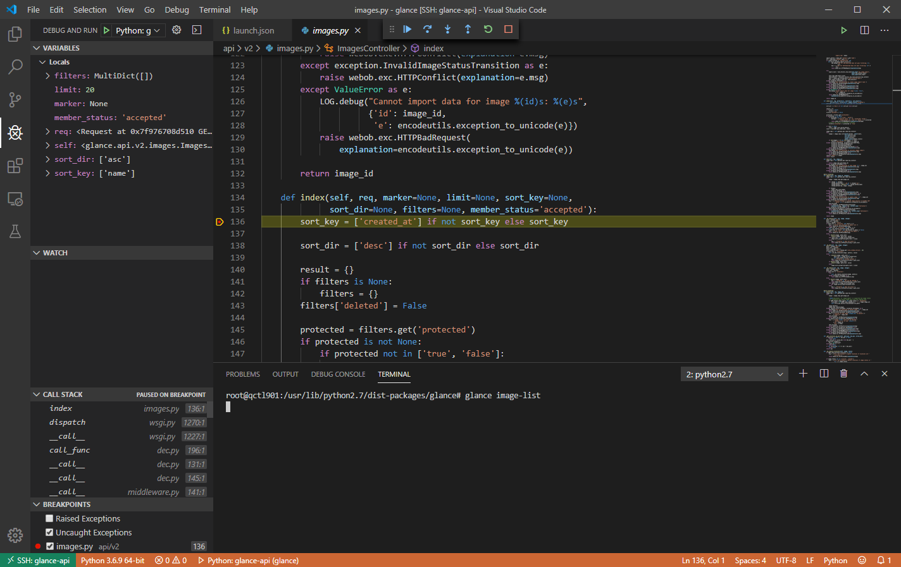

이 문서에서는 Glance 원격 디버깅에 대해서 다룬다. 본격적으로 들어가기 앞서 아래 문서를 읽고 기본 구성을 갖추도록 하자.
Glance 설정 수정
Glance API의 경우 다행히 단일 프로세스로 서비스를 구동할 수 있다. 우선 Glance 서비스를 멈춰두자.
systemctl stop glance-api.service
다음으로 단일 프로세스 모드로 구동하기 위해 설정(/etc/glance/glance-api.conf)을 아래와 같이 수정하자.
[DEFAULT]
workers = 0
이로써 Glance 설정은 모두 끝났다. Nova에 비해서 정말 간단하지 않은가?
Visual Studio Code 설정
Nova의 원격 디버깅 과정처럼 Remote Explorer에 glance-api가 구동되는 서버를 등록한다.

원격지 서버에 접속한 후 Glance 소스 코드 위치를 찾아서 연다. 아래 그림의 경우 Ubuntu 서버이기 때문에 /usr/lib/python2.7/dist-packages/glance에 있다.

다음으로 디버깅 프로파일을 추가하자. 단일 프로세스 모드로 구동하기 때문에 Nova와는 달리 launch 타입의 프로파일을 구성할 것이다. 사이드 바에서 Debug and Run 탭(Ctrl + Shift + D)으로 이동하여 다음과 같이 프로파일을 추가하자.

{
"version": "0.2.0",
"configurations": [
{
"name": "Python: glance-api",
"type": "python",
"request": "launch",
"pythonPath": "/usr/bin/python2",
"program": "/usr/bin/glance-api",
"args": [
"--config-file=/etc/glance/glance-api.conf",
"--log-file=/var/log/glance/glance-api.log",
],
"console": "internalConsole",
"justMyCode": false,
"gevent": true,
"redirectOutput": true
}
]
}
Visual Studio Code가 바로 glance-api 서비스를 구동할 수 있도록 python 경로와 glance-api 경로를 추가한다. 그리고 request 필드의 값을 launch으로 해서 Visual Studio Code에서 glance-api를 직접 실행하여 디버깅하도록 한다. 또한 gevent 필드를 true로 해야 정상적으로 디버깅을 수행할 수 있다.
glance-api 디버깅
이제 모든 준비가 끝났다. 위에서 설정한 디버깅 프로파일을 실행하면 glance-api가 구동된다. 관찰할 코드에 브레이크 포인트를 설정하고 프로파일을 실행해 보자. 여기서는 이미지 목록 조회하는 API에 브레이크 포인트를 걸어보았다.

TERMINAL 패널을 열어 Glance CLI를 통해 이미지 조회를 해보자. 그럼 아래과 같이 브레이크 포인트가 있는 지점에 멈추고 디버깅을 진행할 수 있다.
